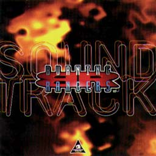
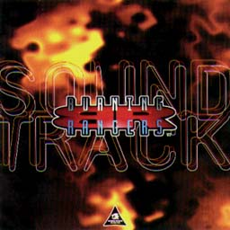

BURNING RANGERS


BURNING RANGERS

|
発売元：株式会社マーベラスエンターテイメント |
|
ソニックチームの大島さんが率いたプロジェクト、バーニングレンジャーのサントラ盤。 サウンドスタッフは幡谷キャプテンがメインとなり、くまたにも参加。 そういえば、彼女は会社に入ってからキチンとしたプロジェクトはソニックチームのものしかやっていないなぁ...。 そんな彼女のコメントを貰ったよ。 2回目に自分の曲がCDになるという体験をしたのがこの作品でした。 また、ソニックチームだ。 ちょっと余裕が出だして伸び伸びの作品。（くまたに） 幡谷キャプテンからもメッセージが来たよ。 バーニングレンジャーのサウンドプランニングはまず効果音ありきだったので、サントラが出せるくらいの曲数が揃うかどうかと思っていましたが、結果的にはイベントシーンなどを盛り上げる曲が何曲か入り、サントラに関してもゲームシーンを一歩一歩なぞるような構成で作ることが出来ました。 このサントラでは海外版で使用された主題歌の英語版も収録されています。 日本語版も英語版もそれぞれ別の味わいが出たので聴き比べてみてください。 主題歌録音はソニックアドベンチャーでも全開の"BEAT ON BEAT"の小杉さんに制作をお願いしました。 小杉さんの手掛ける作品にはいつも80年代の音の良さがありますね。（はたや） |
|
01. Burning Hearts 〜炎のANGEL〜 02. Requset For An Immediate Rescue 03. Darkness 04. Revelation 05. Rising Pressure 06. Anemoth 07. Unknown Alarm 08. Misty 09. Undulatus 10. Soothing Heat 11. Since The Day 12. Myriad Crisis 13. Argoyle G 14. We Are Burning Rangers 15. Judgement Path 16. Unveiled Truth 17. Crescendo To Finale 18. Heartbreaking Encounter 19. Welcome Back! 20. I Just Smile 21. Burning Hearts 〜Short Track〜 22. Burning - Ship To Take Off -ボーナストラック（英語版主題歌）- 23. Angels With Burning Hearts 24. We Are Burning Rangers 25. I Just Smile |
|
・次の作品を見てみたいっす!! ・関連CD＜国内編＞のページへ ・Music CDのページへ ・Sound Web Siteのトップページへ |